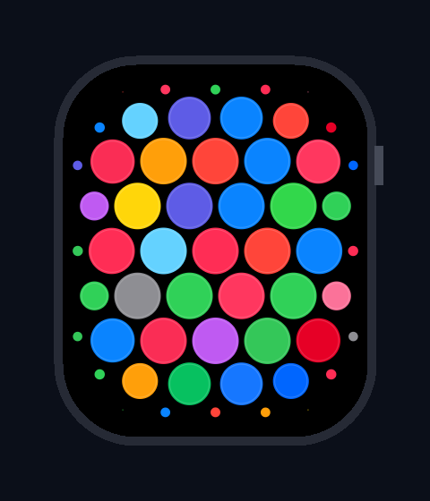
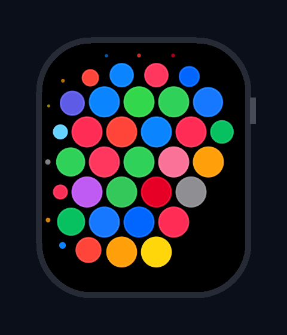

以下为在真机上运行 WatchLauncher Pro v4.0 的实机渲染效果。我们采用超窄边框（5.5dp Bezel）与铺满式向心收缩场，在保留完整蜂巢紧凑张力的同时，彻底消除了外圈黑边：


很多 Android 开发者初看 Apple Watch 蜂窝桌面（Springboard Honeycomb），第一反应是用 RecyclerView、自定义 ViewGroup 或在 Jetpack Compose 里摆放独立 Composable。但只要一上手，就会撞上三大工程死胡同：
| 选型维度 | 传统 ViewGroup / 堆叠式 Composable | 即时渲染管线 (Immediate Mode View) |
|---|---|---|
| 空间形变连续性 | 非线性弯曲空间，子 View 矩阵变换导致 Hit-Test 事件穿透错位 | 数学模型驱动，视算与命中检测合一，100% 绝对对齐 |
| 120Hz 帧率预算 (8.3ms) | 几十个子 View 频繁 measure/layout，RenderThread 压力巨大 | 单 View Canvas 硬件加速直绘，零子组件调度开销 |
| GC 内存抖动 | 手势滑动时频繁创建临时属性动画与 Matrix 对象 | 零堆分配法则，全量对象池化与结构体内联复用 |
从手指滑动的 2D 自由位移，到最终屏幕像素输出，管线经历严格的四阶几何变换：
flowchart TD
A["触摸手势 2D 向量输入
(ScrollX, ScrollY)"] --> B["世界坐标拓扑
轴向六边形密堆积晶格 (q, r)"]
B --> C["超椭圆 SDF 距离场分析
精确度量到表盘边界的跨度"]
C --> D{"空间力场三级分区判定"}
D -->|d ≤ dInner| E["中心平坦区
Scale=1.0, 零向心位移"]
D -->|dInner < d ≤ dBoundary| F["向心过渡区
圆心法向内缩 + 紧凑水滴张力"]
D -->|d > dBoundary| G["消隐视界
Scale 归零, 彻底截断不堆叠"]
E --> H["Canvas 即时绘制
单 View 硬件加速零 GC"]
F --> H
G --> I["缓存更新用于逆序 Hit-Test"]
H --> I
蜂窝桌面要求以特定核心 App 为圆心，呈同心六边形环向外致密包裹。采用轴向坐标系 $(q, r)$ 映射世界物理坐标：
X_world = D * (q + r / 2.0) Y_world = D * (sqrt(3) / 2.0 * r) // 其中相邻间距 D = 2 * R_base + Gutter (56dp + 6dp = 62dp)
市面上开源实现最严重的硬伤在于：只做缩放，导致边缘图标缝隙被拉大到 50dp+，稀疏松散。
flowchart LR
A1["球 1 半径变小
(常规方案)"] -.-|切向距离未拉近: 间距暴增至 50dp| A2["球 2 半径变小
(松散稀疏)"]
B1["球 1 缩小 + 法向向心平移
(本文方案)"] ===|恒定锁定 6.0dp 表面张力| B2["球 2 缩小 + 法向向心平移
(紧致咬合)"]
解法：引入向心法向位移补偿。当小球半径缩减量为 $\Delta R = R_0 \cdot (1 - Scale)$ 时，圆心同步沿边界法线内缩：
$$\text{CenterDist}_{\text{vis}} = D - \Delta R \implies \text{Gap}_{\text{vis}} = \text{CenterDist}_{\text{vis}} - 2 \cdot R_{\text{vis}} \equiv \mathbf{6.0\,dp}$$
使得小球在整个形变过程中，任意方向的表面间隙始终被锁死在恒定区间，呈现出水滴凝胶般的弹性咬合质感。
在表盘物理边缘处，小球尺寸不再维持固定下限，而是沿二次幂平滑收缩至 0，透明度同步归零。超出视界直接 continue 剔除，视口边界干净利落，无任何死图标卡死堆叠。
手势滑动并不是机械的移动，而是具有惯性、阻尼与边界弹性的连续物理系统：
stateDiagram-v2
[*] --> Idle: 静止态 (原点吸附)
Idle --> Dragging: 触摸拖动 (超过 TouchSlop)
Dragging --> Flinging: 松手飞滚 (速度达到初速度阈值)
Dragging --> SnapBack: 越界拖动后松手
Dragging --> Idle: 轻微移动后静止松手
Flinging --> BoundaryCapture: 惯性滑行触发外围凸包
BoundaryCapture --> SnapBack: 动量耗尽，弹性捕获
SnapBack --> Idle: 二阶阻尼弹簧回弹归位
在打磨该方案的整个过程中，关键版本演化路线总结如下：
| 迭代版本 | 核心几何与物理特征 | 缺陷与瓶颈 | 最终结论 |
|---|---|---|---|
| v1.0 初版 | 六边形晶格 + 基础径向平移 | 表盘边界模糊，手机长宽比与表盘不适配 | 确立 45mm 超窄表壳视口方案 |
| v2.0 试验版 | 纯径向正交展开投影 | 小球在交界处跳跃闪烁；切向间距拉大至 50dp | 证实纯正交投影会破坏连贯张力 |
| v3.0 调优版 | 超椭圆边界折叠 + Smoothstep 平滑导数 | 外圈黑边偏宽 (14dp)，表盘内 App 显示偏小 | 核心算法基本完美，需扩展可视面积 |
| v4.0 终极版 | 超窄边框 (5.5dp) + 铺满式向心收缩场 (0.33) | 无，120fps 满帧，充盈铺满，紧凑灵动 | 最终生产级标杆方案 |
本项目由 Nous Research 驱动，遵循严谨图形工程规范与零 GC 绘制哲学设计。
← 返回知识库首页